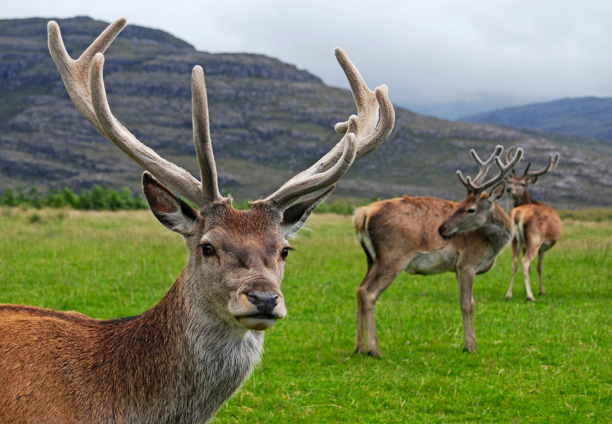

Scotland 2027 · five nights after Edinburgh · Highland Perthshire
Village cottages
Countryside and village places to stay around Blair Atholl, Pitlochry and Dunkeld, all workable without a car. Photos show each place and its surroundings; the cottage links have photos of the houses themselves. Video cards open a YouTube search.
Top pick
Blair Atholl · farm steading on a working estate
Tom of Lude, Lude Estate
- Woolstore: double + 2 twins (own room each); Byre: double + twin
- About 20 min walk to Blair Atholl station; bus 87 to Bruar and Killiecrankie
- ≈ £700–900 for 5 nights (estimate, phone 01796 481642)
- Straloch about 30 min by taxi


Runner-up
Moulin · 17th-century cottage under Ben Vrackie
The White House, Moulin
- Double + 2 twins (own room each)
- About 20 min walk to Pitlochry station; Ben Vrackie path from the door
- ≈ £710 for the week (August lets are weekly)
- Straloch about 15 min by taxi, the closest


Option
Killiecrankie · hillside cottage above the battlefield
Lettoch Beag, Killiecrankie
- 2 bedrooms, both can be twins; adults and over-14s only
- Bus 87 at Killiecrankie
- £1,165 a week, Aug 2027 rate published
- Straloch about 25 min by taxi


Option
Struan · remote cluster of farm cottages (Atholl Estates)
Clachan Cottage, Struan
- King + twin
- Bus 87/83 to Calvine; 4 miles to Blair Atholl station
- £830–840 for 5 nights, 2027 tariff, castle entry included
- Straloch about 35 min by taxi


Option
Birnam & Dunkeld · village on the Tay with its own station
Ladyhill Coach House, Birnam
- Double + twin
- Under 1 mile to Dunkeld & Birnam station; bus 23 to the rafting
- £650–800 a week, Saturday changeover
- Straloch about 40 min by taxi


Option
Straloch Estate · stay where the stalking is
Keeper's Cottage, Straloch
- 2 bedrooms that split into twins, sleeps 4
- No bus; taxis for everything, bikes to borrow
- July–Aug: 7 nights minimum, Friday to Friday; price on request
- Stalking on the doorstep
